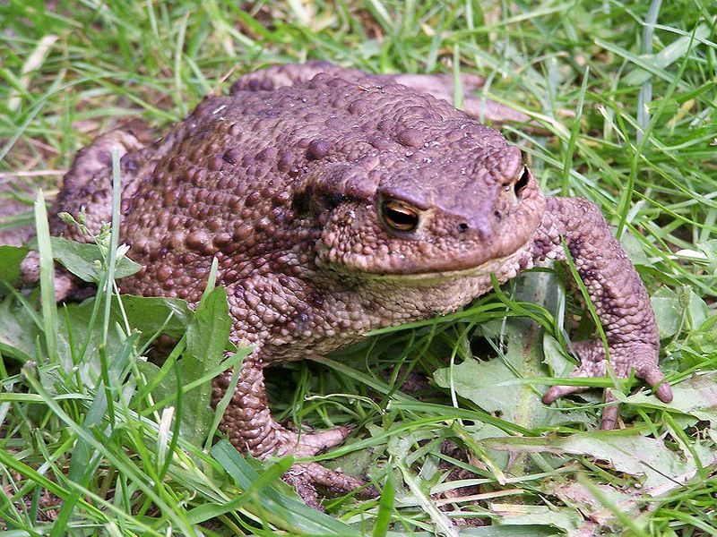

Erdkröte
Bufo bufo
In lauen Märznächten ziehen die Érdkröten, einzeln oder verpaart, zu den Laichgewässern. Aber nur wer dem Straßentod entgeht, erreicht sein Ziel. Deshalb bemühen sich alljährlich Naturschützer, um die Wanderwege von Amphibien zu sichern. Wenn im Sommer die ausgereiften Jungkröten in großer Zahl das Wasser verlassen, heißt es im Volksmund "Es hat Krotten gehagelt!“